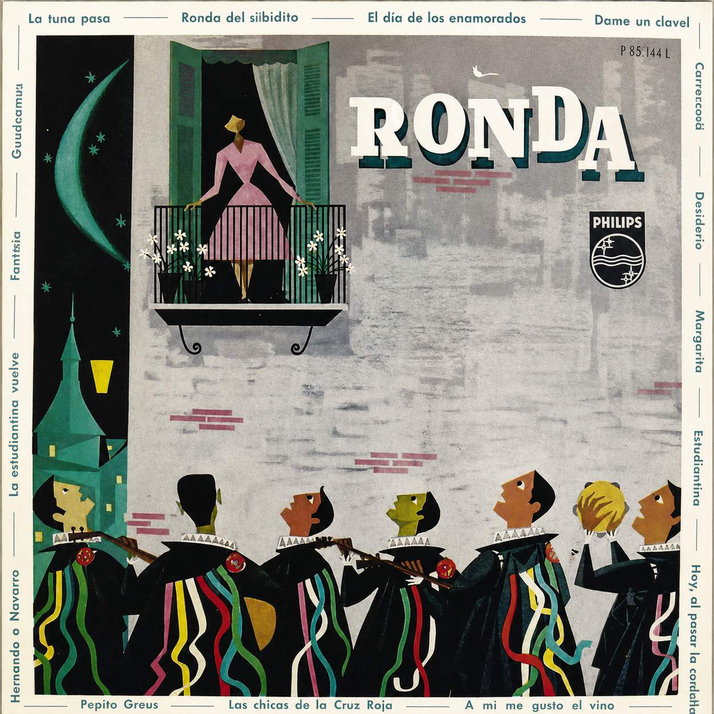
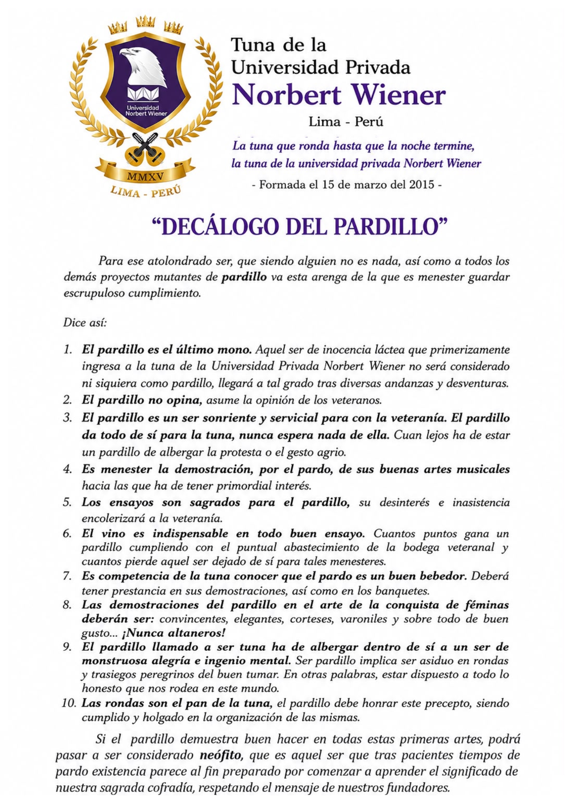

Gestor del Cancionero (Área Privada)
Diseña tu canción con múltiples columnas/páginas móviles, añade reseña histórica y descarga el código HTML final.
Vista Previa en Tiempo Real
¡la tuna que ronda hasta que la noche termine!
Bienvenido al portal oficial de aprendizaje, tradición y archivo musical de la Tuna de la Universidad privada Norbert Wiener.
Cancionero
Aprende las letras y los acordes oficiales de nuestro repertorio.
Decálogo
Conoce e imprime el decálogo de la hermandad.
Real Orden de Ascenso
conoce un poco de nuestros tunos.
Minijuegos
Pon a prueba tus conocimientos sobre la Tuna jugando.
Cancionero & Transcripciones
Busca cualquier canción y despliega los acordes para guitarra, laúd o bandurria.
Clavelitos vals 3/4
La emblemática canción conocida popularmente como «Clavelitos» nació en 1949 bajo el título original de «Dame un clavel», con música compuesta por Genaro Monreal y letra de Federico Galindo, quien la escribió como un sincero gesto de amor para su entonces novia y posterior esposa. Su primera grabación en disco de vinilo tuvo lugar en 1958 a cargo de la Estudiantina de Madrid, figurando aún con su nombre original en la carátula.
En cuanto a su género y estructura, la obra fue concebida dentro del ámbito de las estudiantinas españolas con un carácter de vals / pasacalle. Está construida sobre un alegre compás de 3/4 que se percibe con un balance fluido y elegante («¡UN! - dos - tres»), lo que la convierte en un pasacalle ideal: un ritmo pensado para cantar mientras se camina por las calles y perfecto para ofrecer serenatas bajo los balcones.

Maitetxu mía zortziko 3/4
Maitetxu mía es uno de los temas más emblemáticos y emotivos del repertorio tradicional de la Tuna, compuesto originalmente como un zortzico en 1927 por el maestro granadino Francisco Alonso y letra del madrileño Emilio González del Castillo, quien la escribió inspirándose en las profundas e históricas vivencias de la emigración vasca hacia América.
La canción narra la melancólica historia de un emigrante vasco que parte a tierras lejanas para hacer fortuna, prometiendo regresar con su amada, pero al volver rico se encuentra con la trágica noticia de que ella ha muerto esperándolo.
Amalia pasodoble 2/4
la novia del pescador pasodoble 2/4
Mix criollos 2 vals criollo 3/4
Muñequita linda Bolero 4/4
Decálogo de la Tuna
Visualiza el documento oficial o descárgalo en alta resolución.


Real Orden de Ascenso (ROA)
Jerarquía e historial de los Tunos de Beca de nuestra hermandad.
Minijuegos Tradicionales
¿Qué tanto sabes de la Tuna? Ponte a prueba.